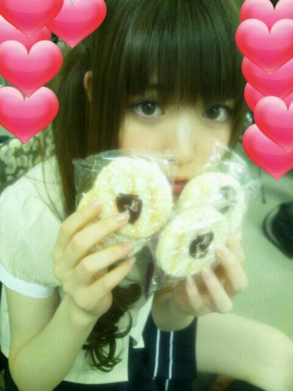

2012/0628Thuまじめなのかっ(o・・o)/~
こんにちりんごっ(o・・o)
さゆりんごっ(o・・o)
先日、ゆび祭りに参加させていただきました！
沢山のアイドルさんがいて
パフォーマンスをみました！
うちが思ったのは
多くを求めすぎてはいけないってこと。
会場には上から下まで
沢山のファンの方がいたけど
乃木坂４６は始めてって方が
大半だったと思います。
その中で私達はどんなパフォーマンスを
するべきなのか...
ゆび祭りでは
私達は乃木坂４６らしさを大切にしました。
乃木坂４６らしさという点では
凄く満足のいくパフォーマンスになったのではと
私は思います！
だけど、違う視点で考えると
全然出来てなかったと思います！
他のアイドルグループのみなさんをみて
思うことは沢山ありました。
けど、あれもやりたい。これもやりたい。と
求めてばかりいると
私達の目指しているものも
見えなくなってしまうんじゃないかと
思いました。
乃木坂４６という軸から
ぶれないようにするのは
意外に大変な気もします。
まだ私達は全然知られてないグループなので
自分たちの色を失わないように
始めての方にも
乃木坂４６はこんなグループなんや〜って
覚えてもらえるように
頑張らないとですね！
今はまだ我慢と努力の日々やけど
いつかもっとライブとかイベントが
できるようになったら
うちらがやりたいこととか
いっぱいやっていけたらいいな〜って
思います！
なんのこっちゃ〜な方は
すみません！
まぁ簡単に言うと
めっちゃ焦ることもあるけど
乃木坂は乃木坂らしく
頑張ります！ってことなのだ〜(*^^*)！
ほんでから、前のブログも
コメントありがとうございます♪
大阪の名物といったらは
たこ焼き派の方が多いですね〜
確かにお好み焼きは
広島風も美味しいですよね〜(*^^*)
松村はモダン焼きが好きなのです！
お好み焼きに麺が入ってるんやけど
その麺がすきでね〜
やから、麺が入ってる
広島風のお好み焼きも大好きなんよ〜(*´∇｀*)
たこ焼きは大阪だけやしね〜
やっぱりたこ焼きなんかな〜(*^^*)
ちなみに松村家も
たこ焼き器ありましたよ〜(^-^)v
さゆりんね〜
たこ焼きとお好み焼きは
作れる自信あるよ〜(*´∇｀*)
家でよう作ってたし〜(*^^*)
どっちも大好き〜☆
東京は売ってるお店が少ないから
悲しいんよ〜(;_;)
ほなら、またまた質問！
ちびっこが大好きなメニューの
カレーライスとハンバーグ！
あなたはどっち派!?
これ、めっちゃ難問やね(((^^;)
みんな頑張ってーヽ(・ω・)ノ笑
最近はまってる雪の宿！
好きすぎてまいやんに撮ってもらった♪笑

ほな、またね〜☆
さゆりんごでしたっ(o・・o)/~
2012/06/28 15:36
コメント(565)
ゆび祭り行きたかった～|ω・｀)
子供はカレーやね！
俺も雪の宿たまに食べるけど
おいしいよねー(´∀｀*)
子供はカレーやね！
俺も雪の宿たまに食べるけど
おいしいよねー(´∀｀*)
ゆび祭りお疲れ様!
今週も頑張って行こう!
さゆりんさゆりんさゆりんご
お休み
今週も頑張って行こう!
さゆりんさゆりんさゆりんご
お休み
さゆりーーん(*゜▽゜*)
雪の宿うまいよね(笑 俺はカレー派カナ？
ばいっ(●´▽｀)／
指祭りお疲れ(^-^)
さゆりんを日本武道館で見たかった(泣)
他のグループ見たらぶれる気持ちわかる
そこで自分達の持ち味失ったこと俺は経験してるしな...
乃木坂は乃木坂らしくやっていけるって信じてる！
あー
広島風食べたいよお(>_<)
さゆりんを日本武道館で見たかった(泣)
他のグループ見たらぶれる気持ちわかる
そこで自分達の持ち味失ったこと俺は経験してるしな...
乃木坂は乃木坂らしくやっていけるって信じてる！
あー
広島風食べたいよお(>_<)
たこ焼きはやっぱり「銀ダコ」！
そとカリカリ、なかトロトロ！
自分は、ハンバーグカレー派♪( ´▽｀)
またまた難しいなー
というよりきわどい質問ばかりやな！
福神ずけがあったらカレーかな！
もうすぐ高校野球の予選が始まるね！
というよりきわどい質問ばかりやな！
福神ずけがあったらカレーかな！
もうすぐ高校野球の予選が始まるね！
ゆび祭り行ったよー！
さゆりん相変わらず可愛くて惚れたー！(笑)
私はハンバーグかなー♡
でも両方好きっ！！
さゆりんごお疲れ
カレーとハンバーグか
うーん
ハンバーグカレーがいい笑
ダメ？
さゆりんごのたこ焼き食べたいわ。
でも大丈夫かな？笑危険や笑
ゆび祭りお疲れ様
思うところたくさんあるけどさゆりんごらしく毎日がんばろね。
おやすみ
カレーとハンバーグか
うーん
ハンバーグカレーがいい笑
ダメ？
さゆりんごのたこ焼き食べたいわ。
でも大丈夫かな？笑危険や笑
ゆび祭りお疲れ様
思うところたくさんあるけどさゆりんごらしく毎日がんばろね。
おやすみ
それ 好きやーー
雪の宿 好きやーー
小さく割って
少し 口の中で遊ばせてから 食べるのが 好きやー
雪の宿 好きやーー
小さく割って
少し 口の中で遊ばせてから 食べるのが 好きやー
りんごだよ！
さゆりんごじゃないよ(笑)
指祭りは乃木坂カラーを大事にしようと意識してるだけで良かったんじゃない？(^-^*)
まいやんのブログで雪の宿見たよ(☆｡☆)
実は私も大好きなんだぁ!!
さゆりんご大好きやでー!!
さゆりんごじゃないよ(笑)
指祭りは乃木坂カラーを大事にしようと意識してるだけで良かったんじゃない？(^-^*)
まいやんのブログで雪の宿見たよ(☆｡☆)
実は私も大好きなんだぁ!!
さゆりんご大好きやでー!!
雪の宿も美味しいけど
ぽたぽた焼も美味しいですよ(^^;)
知ってましたか( ´艸｀)？
ぽたぽた焼も美味しいですよ(^^;)
知ってましたか( ´艸｀)？
さ、さゆりん、たこ焼き作れるの…？←
こんばんさゆりんごっ(・´з`・)
乃木坂は乃木坂らしく！
軸がぶれないさゆりんご！
俺はいまの乃木坂の感じ
すっごい好きやで～
焦らず行こうー！
雪の宿ちょうだい
こんばんさゆりんごっ(・´з`・)
乃木坂は乃木坂らしく！
軸がぶれないさゆりんご！
俺はいまの乃木坂の感じ
すっごい好きやで～
焦らず行こうー！
雪の宿ちょうだい
ゆび祭りお疲れ様
おれゎ行けなかったけど
応援してた(^^)v
乃木坂らしく頑張ってヾ(=^▽^=)ノ
俺ゎハンバーグかな(。≧∇≦。)
ついでに質問するよ
さゆりんの好きな番号ゎ何番？
３rdの個別行くんで
よろしく～(笑)
ゆび祭りお疲れさま～☆
僕は行けなかったけど…＞＜
7日の全握で会えるから我慢しまつ…T＿T
カレーとハンバーグだったらハンバーグ派!!♪
ゆび祭りお疲れ様やね!!
確かに乃木坂初めての人多かったやろなぁ…
行けんくてゴメンね(>_<)
さゆりんの言う通り今は乃木坂にしか無いような色で頑張って行こうなぁ
んで武道館で乃木坂が単独ライブするんめっちゃ楽しみにしてるからね(^^)
やっぱり大阪名物はたこ焼きかぁ
ちょっとね大阪に美味しいお好み焼き屋があったもんで
さゆりんに聞いて欲しかったんよ～
聞いてくれてありがとう♪
故に一緒にモダン焼き食べに行くしかっ!!笑
おっやっぱり大阪だけあって家にたこ焼き器あるんやなぁ～
僕ん家もあるよ～
さゆりんに作って欲しいなぁ(*^^*)
チビッコはねぇ
食いしん坊の子は何となくハンバーグ好きそう!!
お店行ってあんまカレーって頼まなそうやしねぇ♪
さゆりんは両方頼むんでしょ(^Ｏ^)笑
僕はハンバーグだけで足りるよ～
雪の宿はうちの母さんがめっちゃ好きやでぇ～
美味しいよねぇ♪
ちなみに母さんはさゆりんのこといつもめっちゃ可愛いって言ってるねん
お母さん世代からも愛されるさゆりんさすがやわっ!!
これからもさゆりんらしく頑張ってね!!
おやすみんご☆
確かに乃木坂初めての人多かったやろなぁ…
行けんくてゴメンね(>_<)
さゆりんの言う通り今は乃木坂にしか無いような色で頑張って行こうなぁ
んで武道館で乃木坂が単独ライブするんめっちゃ楽しみにしてるからね(^^)
やっぱり大阪名物はたこ焼きかぁ
ちょっとね大阪に美味しいお好み焼き屋があったもんで
さゆりんに聞いて欲しかったんよ～
聞いてくれてありがとう♪
故に一緒にモダン焼き食べに行くしかっ!!笑
おっやっぱり大阪だけあって家にたこ焼き器あるんやなぁ～
僕ん家もあるよ～
さゆりんに作って欲しいなぁ(*^^*)
チビッコはねぇ
食いしん坊の子は何となくハンバーグ好きそう!!
お店行ってあんまカレーって頼まなそうやしねぇ♪
さゆりんは両方頼むんでしょ(^Ｏ^)笑
僕はハンバーグだけで足りるよ～
雪の宿はうちの母さんがめっちゃ好きやでぇ～
美味しいよねぇ♪
ちなみに母さんはさゆりんのこといつもめっちゃ可愛いって言ってるねん
お母さん世代からも愛されるさゆりんさすがやわっ!!
これからもさゆりんらしく頑張ってね!!
おやすみんご☆
ハンバーグかカレーかぁ、、、
めっちゃ迷うやん笑
ハンバーグにカレーをかけて食べるっていうのはいいのかな＾＾？おいしいから大好き＾＾
雪の宿、俺も大好きだよ！
家に年がら年中置いてあるんだ～＾＾
甘くてめっちゃうまいよね(^O^)
でも食べ過ぎると虫歯になっちゃうから気をつけて～(>_<)
ほな、またね～☆(笑
めっちゃ迷うやん笑
ハンバーグにカレーをかけて食べるっていうのはいいのかな＾＾？おいしいから大好き＾＾
雪の宿、俺も大好きだよ！
家に年がら年中置いてあるんだ～＾＾
甘くてめっちゃうまいよね(^O^)
でも食べ過ぎると虫歯になっちゃうから気をつけて～(>_<)
ほな、またね～☆(笑
さゆりん！
これから一緒にがんばってこ！
大阪の全握いくからね！
ほんまたのしみ！
雪の宿うまいよな(^-^)
おれもすき！
まっん
仕事にレッスンお疲れー(^_^)/
乃木坂も人気でてきたな(^_^)
嬉しいことや‼
そうそう‼
お好み焼きはやっぱモダン焼きやでな(^o^)丿
ボリュームあるし‼
今度大阪に帰ってきたときにお好み焼きの
美味しい店教えるは(^o^)丿
まいまいには教えたけど‼
さぁ仕事仕事(^_^)
じゃまたな(^_^)/~
仕事にレッスンお疲れー(^_^)/
乃木坂も人気でてきたな(^_^)
嬉しいことや‼
そうそう‼
お好み焼きはやっぱモダン焼きやでな(^o^)丿
ボリュームあるし‼
今度大阪に帰ってきたときにお好み焼きの
美味しい店教えるは(^o^)丿
まいまいには教えたけど‼
さぁ仕事仕事(^_^)
じゃまたな(^_^)/~
雪の宿俺も好き(*´▽｀*)
ずっと気長に応援してるからがんばって～
個別握手券確保にかなり暗雲がたちこめてる～笑
個別握手券確保にかなり暗雲がたちこめてる～笑
さゆりんなりにしっかり考えてるんだね(´∀`)
うん。乃木坂らしく頑張っていけばいいと思います!!
カレーとハンバーグどっちかなんて選べません(>_<)
でも今日カレー食べたから明日食べるならハンバーグかな(^o^)
ハンバーグにカレーかけて食べるのが理想←
もう金曜日ですね。
最近毎日があっという間です。
明日もお仕事がんばって^^
おやすみなさい
ノシ
うん。乃木坂らしく頑張っていけばいいと思います!!
カレーとハンバーグどっちかなんて選べません(>_<)
でも今日カレー食べたから明日食べるならハンバーグかな(^o^)
ハンバーグにカレーかけて食べるのが理想←
もう金曜日ですね。
最近毎日があっという間です。
明日もお仕事がんばって^^
おやすみなさい
ノシ
こんばんりんごっ(o・・o)
ばしょうです(o・・o)
ゆび祭りは行けんかったけど、見に行った人が
乃木坂はフレッシュで良かったって言ってたよ～♪
今しかできんパフォーマンスもあるからね、
どんどん坂登ってけばいいのさ♪
焦らずじっくり(*^^)v
たこ焼きとお好み焼きは、自分で作れるとこにしか
最近食べいかへんくなったｗ
やっぱワイワイたこパするんもいいよねー！
カレーライスかハンバーグなら、
カレーライス！！朝昼晩カレーでも行けるで～！笑
そいでは～
おやすみなさゆりんご♪
ばしょうです(o・・o)
ゆび祭りは行けんかったけど、見に行った人が
乃木坂はフレッシュで良かったって言ってたよ～♪
今しかできんパフォーマンスもあるからね、
どんどん坂登ってけばいいのさ♪
焦らずじっくり(*^^)v
たこ焼きとお好み焼きは、自分で作れるとこにしか
最近食べいかへんくなったｗ
やっぱワイワイたこパするんもいいよねー！
カレーライスかハンバーグなら、
カレーライス！！朝昼晩カレーでも行けるで～！笑
そいでは～
おやすみなさゆりんご♪
さゆりんごー!!
ゆび祭りお疲れ様、いきたかったなー(*_*)
そうだね、乃木坂には乃木坂だけのコンセプトがある。 色々やりすぎたら普通のアイドルグループになっちゃうもんね!!
できれば秋頃ファーストアルバムをひっさげてライブもたくさんやって欲しいな(^o^) 期待してます(^-^)/~~
さゆりんのたこ焼きにお好み焼き…すっごく怖いけど食べてみたい(^^;笑
カレーとハンバーグ超難問やね(T_T)
…カレーかな!! ドロドロの辛口カレーが大好き(>_<)
さゆりんはー？
dai
ゆび祭りお疲れ様、いきたかったなー(*_*)
そうだね、乃木坂には乃木坂だけのコンセプトがある。 色々やりすぎたら普通のアイドルグループになっちゃうもんね!!
できれば秋頃ファーストアルバムをひっさげてライブもたくさんやって欲しいな(^o^) 期待してます(^-^)/~~
さゆりんのたこ焼きにお好み焼き…すっごく怖いけど食べてみたい(^^;笑
カレーとハンバーグ超難問やね(T_T)
…カレーかな!! ドロドロの辛口カレーが大好き(>_<)
さゆりんはー？
dai
あっ忘れてた！
ちなみにカレー派♪
ちなみにカレー派♪
「雪の宿」好きなんて、シブいさゆりんご（＾＾）♪
乃木坂さん、いいパフォーマンス
だったと思いますよ☆
歌は可愛らしくて、振りも楽しそうで
しっかりその世界を作り上げていました。
他のグループにも個性があるように
乃木坂さんにもしっかり個性があります。
それをしっかり考えているあたり、さゆりんご
「さすが」と感じました！
関西風で言う「モダン焼き」ね（＾＾）
ごはんがなくても「食事」になるねｗ
回答：ハンバーグは「たまに食べたくなる」
カレーは「毎日食べても飽きない」……したがって
私はカレーです☆
乃木坂さん、いいパフォーマンス
だったと思いますよ☆
歌は可愛らしくて、振りも楽しそうで
しっかりその世界を作り上げていました。
他のグループにも個性があるように
乃木坂さんにもしっかり個性があります。
それをしっかり考えているあたり、さゆりんご
「さすが」と感じました！
関西風で言う「モダン焼き」ね（＾＾）
ごはんがなくても「食事」になるねｗ
回答：ハンバーグは「たまに食べたくなる」
カレーは「毎日食べても飽きない」……したがって
私はカレーです☆
久しぶりやな
乃木坂の色
確かに深く考えると難しいしごちゃになるけど
俺っちもこれから応援することは変わらないし少しずつでも着実に成長できるように！もちろん力になれるかわからないけど一緒に頑張ろう。
普段ニコニコしてるけどそうやって真剣に考えれる沙友理はすごい
質問…いやあなたの作ったカレーや…ハンバーグをみてみたい…
雪の宿w
ぱりんこしか★
おっすさゆりん( ´ ▽ ` )ﾉ
画像雪の宿似合い過ぎじゃないか！？
さゆりんかわい過ぎるぞ！！
悩むこと考えることは良いことだと
思うよ！！
乃木坂らしさってなんだろ？
頑張れば自然とでてくるんじゃないかな？
ファンとして楽しみです♪( ´▽｀)
質問は難しすぎて…選べないわorz
画像雪の宿似合い過ぎじゃないか！？
さゆりんかわい過ぎるぞ！！
悩むこと考えることは良いことだと
思うよ！！
乃木坂らしさってなんだろ？
頑張れば自然とでてくるんじゃないかな？
ファンとして楽しみです♪( ´▽｀)
質問は難しすぎて…選べないわorz
こんばんりんご！
ゆび祭りお疲れさま（＾Ｏ＾）
ぶれない、色を失わない、
軸を探す、色を認識する、
難しいと思うけど頑張って！(^^)
うん,乃木坂は乃木坂らしく ♪
やっぱりたこ焼きでし！
モダン焼きって何だなんだ？∧( 'Θ' )∧
麺入りお好み焼きー？
大阪行ったら食べてみよっ(^o^)♪
自分はカレー派！！！
カレーライス大好き！＼(^o^)／
雪の宿も好きーーー！
絶妙なね、甘さがね、たまらんよね！
ゆび祭りお疲れさま（＾Ｏ＾）
ぶれない、色を失わない、
軸を探す、色を認識する、
難しいと思うけど頑張って！(^^)
うん,乃木坂は乃木坂らしく ♪
やっぱりたこ焼きでし！
モダン焼きって何だなんだ？∧( 'Θ' )∧
麺入りお好み焼きー？
大阪行ったら食べてみよっ(^o^)♪
自分はカレー派！！！
カレーライス大好き！＼(^o^)／
雪の宿も好きーーー！
絶妙なね、甘さがね、たまらんよね！
僕はハンバーグ派かな!!
カレーで煮込むハンバーグもめっちゃ美味しよぉ(^-^)v♪
カレーで煮込むハンバーグもめっちゃ美味しよぉ(^-^)v♪
お疲れ～( *・ω・)ノ
一歩一歩、焦らず、乃木坂らしさを大切に。
他のグループの良いところを吸収するのも大事。
でも乃木坂はまだ完全に土台が出来てないから、あと一年は勉強期間。
欲張る貪欲さは大事だよ。
自分のパフォーマンスの幅を広げるために。
今回見に行けんかった（つд；*)
次は見に行く！
え？
お好み焼き作れんの？笑
またまたご冗談を( ￣▽￣)笑
おばあちゃんが作るカレー！
これに敵うものは今まで出てきたことない(^_^)/
雪の宿おれも大好き！
一日で一袋なくなっちゃう( ￣▽￣)笑
お仕事頑張って！
一歩一歩、焦らず、乃木坂らしさを大切に。
他のグループの良いところを吸収するのも大事。
でも乃木坂はまだ完全に土台が出来てないから、あと一年は勉強期間。
欲張る貪欲さは大事だよ。
自分のパフォーマンスの幅を広げるために。
今回見に行けんかった（つд；*)
次は見に行く！
え？
お好み焼き作れんの？笑
またまたご冗談を( ￣▽￣)笑
おばあちゃんが作るカレー！
これに敵うものは今まで出てきたことない(^_^)/
雪の宿おれも大好き！
一日で一袋なくなっちゃう( ￣▽￣)笑
お仕事頑張って！
ゆび祭りお疲れさん☆
すごく盛り上がったみたいね！
行きたかったーー！
そうそう
乃木坂らしく、
さゆりんらしく頑張って行くことが大切だよね(^-^)
頑張っていれば、きっと自然とみんなに伝わっていくよ！
ずっと応援＆期待してるからねъ(｀ー゜)
えっと･･･
カレーとハンバーグとスパゲティは、
自分の３大好物なんよ～あんまり悩ませないで(笑)
でも、選べと言われたらカレーライスかな
雪の宿、両手いっぱい持つくらい好きなんだ(笑)
カワイイやつだなぁ(´∀｀)
すごく盛り上がったみたいね！
行きたかったーー！
そうそう
乃木坂らしく、
さゆりんらしく頑張って行くことが大切だよね(^-^)
頑張っていれば、きっと自然とみんなに伝わっていくよ！
ずっと応援＆期待してるからねъ(｀ー゜)
えっと･･･
カレーとハンバーグとスパゲティは、
自分の３大好物なんよ～あんまり悩ませないで(笑)
でも、選べと言われたらカレーライスかな
雪の宿、両手いっぱい持つくらい好きなんだ(笑)
カワイイやつだなぁ(´∀｀)
自分はカレーッス
学食で毎日食べてます！
カレーにはリンゴ入れます(笑)
学食で毎日食べてます！
カレーにはリンゴ入れます(笑)
さゆりん こんばんはです。
他の先輩グループから学ぶことは多いですね(汗)
大坂行ったとき必ずたこ焼きは食べるよ。
さすが本場だけあって全然 味が違うね
めちゃめちゃ(^q^)
ハンバーグかな
かなり(-_-;)ね
雪の宿 僕も好き
ちょっと甘いところがいいね
他の先輩グループから学ぶことは多いですね(汗)
大坂行ったとき必ずたこ焼きは食べるよ。
さすが本場だけあって全然 味が違うね
めちゃめちゃ(^q^)
ハンバーグかな
かなり(-_-;)ね
雪の宿 僕も好き
ちょっと甘いところがいいね
もちろんカレー｀・ω・´
でもハヤシライスのほうが
好きなんよなぁ≧ω≦
でもハヤシライスのほうが
好きなんよなぁ≧ω≦
さゆりん、こんばんご～(-。-)y-~
指祭り本当めっちゃ行きたかったよ～(ToT)
今は、まだAKBとかに比べたらそんなに知られてないかも知れないけど、乃木坂は、乃木坂らしくやってたら、いつか、武道館でのライブだって絶対叶うよ！！！
乃木坂らしいパフォーマンスをしてれば絶対絶対ファンは、増えると思う(>_.<)y-~！！
さゆりんのたこ焼食べたい(笑)＼(^o^)／
いくらで売ってくれるかな！？(^з^)-☆(笑)
う～ん、めっちゃ難問！！
でもやっぱり一番は、カレーライスでしょ！！(￣^￣)(笑)
ではでは、さゆりん明日もお仕事頑張ってね～(^o^ゞ
雪の宿自分も大好きなんよ～(^o^)v！！
指祭り本当めっちゃ行きたかったよ～(ToT)
今は、まだAKBとかに比べたらそんなに知られてないかも知れないけど、乃木坂は、乃木坂らしくやってたら、いつか、武道館でのライブだって絶対叶うよ！！！
乃木坂らしいパフォーマンスをしてれば絶対絶対ファンは、増えると思う(>_.<)y-~！！
さゆりんのたこ焼食べたい(笑)＼(^o^)／
いくらで売ってくれるかな！？(^з^)-☆(笑)
う～ん、めっちゃ難問！！
でもやっぱり一番は、カレーライスでしょ！！(￣^￣)(笑)
ではでは、さゆりん明日もお仕事頑張ってね～(^o^ゞ
雪の宿自分も大好きなんよ～(^o^)v！！
真面目も大事‼
乃木坂は乃木坂らしく、紫以外の色に染まる必要はないと思います‼
この前、雪の宿のお徳用のめっちゃデカくて、めっちゃたくさん入ってるやつ、売ってた！1000円！w
あ、圧倒的にハンバーグです‼肉、肉、肉です！
乃木坂は乃木坂らしく、紫以外の色に染まる必要はないと思います‼
この前、雪の宿のお徳用のめっちゃデカくて、めっちゃたくさん入ってるやつ、売ってた！1000円！w
あ、圧倒的にハンバーグです‼肉、肉、肉です！
こんばんごっ(o・・o)
祭りは見てないからノーコメントで←
あまり食べ過ぎちゃダメよ(笑)
質問、1週間カレーでも平気なのでカレーだなｗｗ
祭りは見てないからノーコメントで←
あまり食べ過ぎちゃダメよ(笑)
質問、1週間カレーでも平気なのでカレーだなｗｗ
さゆりんご
コメント18回目
( ´艸｀)
指祭り楽しかったカナ
おつかれー
たこ焼きとお好み焼きを
つくる企画があれば
クッキングモンスターとか
いわれなくなるね!!
自分はカレー派!!
雪の宿か～
甘くてしょっぱい感じがすき!!
おやすみー
コメント18回目
( ´艸｀)
指祭り楽しかったカナ
おつかれー
たこ焼きとお好み焼きを
つくる企画があれば
クッキングモンスターとか
いわれなくなるね!!
自分はカレー派!!
雪の宿か～
甘くてしょっぱい感じがすき!!
おやすみー
初コメントですf^_^;)
僕はカレー派の人間です(o^^o)
ちなみにこないだ
CoCo壱番屋のカレーの5辛食べて
死にそうになりました(/ _ ; )笑
さゆりんは何辛食べますか？
教えて下さい♪♪
僕はカレー派の人間です(o^^o)
ちなみにこないだ
CoCo壱番屋のカレーの5辛食べて
死にそうになりました(/ _ ; )笑
さゆりんは何辛食べますか？
教えて下さい♪♪
カレーライス！
まぁ、ハンバーグも嫌いじゃないけどね♪
話戻して…
乃木坂46は乃木坂46らしくあるべきだと
俺も思うよー。
だから、いつまでも今のままでいてね(＾ω＾)
まぁ、ハンバーグも嫌いじゃないけどね♪
話戻して…
乃木坂46は乃木坂46らしくあるべきだと
俺も思うよー。
だから、いつまでも今のままでいてね(＾ω＾)
ゆび祭りお疲れさま!
乃木坂にとって
プラスのイベントになったみたいやで良かった(^O^)
カレーライス派!!
夕飯カレーやったわ(笑)
乃木坂にとって
プラスのイベントになったみたいやで良かった(^O^)
カレーライス派!!
夕飯カレーやったわ(笑)
ゆび祭りお疲れ！
ライブ見たいなぁ(´・ω・｀)
乃木坂は乃木坂らしくでいいと思うよ！
そこを見て好きになったわけだし( ´ﾟдﾟ｀)
まだまだこれから成長できるって思うと楽しみだしさっ！
たこ焼き器うちにもあるよ！
大たこ仕様のやつ！
カレーとハンバーグだったら断然カレー！！！！
てか食べ物の中でカレーが一番好き！
雪の宿っておばあちゃんのイメージがあるw
いや、好きだけどさw
ライブ見たいなぁ(´・ω・｀)
乃木坂は乃木坂らしくでいいと思うよ！
そこを見て好きになったわけだし( ´ﾟдﾟ｀)
まだまだこれから成長できるって思うと楽しみだしさっ！
たこ焼き器うちにもあるよ！
大たこ仕様のやつ！
カレーとハンバーグだったら断然カレー！！！！
てか食べ物の中でカレーが一番好き！
雪の宿っておばあちゃんのイメージがあるw
いや、好きだけどさw
名古屋のかずだよー！！
覚えてるかな？？
忘れたら怒るよ？？笑
次の名古屋の握手会で覚えとるかチェックやね(#^.^#)
早く握手したいよーー
ちなみにかずはカレー派ｗｗ
自分でも作りますよ!(^^)!
さゆりんは料理する？？
覚えてるかな？？
忘れたら怒るよ？？笑
次の名古屋の握手会で覚えとるかチェックやね(#^.^#)
早く握手したいよーー
ちなみにかずはカレー派ｗｗ
自分でも作りますよ!(^^)!
さゆりんは料理する？？
うわぁ(泣)
うん、何かメンバーみんなしっかり自覚はあるのかなって
思うと少しだけど安心した。
何か、上から目線みたいなコメントになっちゃったけど
そういうつもりじゃないってことだけは把握お願いします←
乃木坂は乃木坂らしく
うん、これからもついてくんで頑張って＼(^o^)／
うん、何かメンバーみんなしっかり自覚はあるのかなって
思うと少しだけど安心した。
何か、上から目線みたいなコメントになっちゃったけど
そういうつもりじゃないってことだけは把握お願いします←
乃木坂は乃木坂らしく
うん、これからもついてくんで頑張って＼(^o^)／
雪の宿だーーーーーｗｗｗ俺も大好きですｗｗｗ。指祭りお疲れ様＼(^o^)／乃木坂は乃木坂らしく、さゆりんはさゆりんらしくこれからも頑張ってください！
カレーとハンバーグ・・・ハンバーグのほうが好きですねｗｗ
そして、今週ののぎどこは・・・料理ですねｗｗｗいろいろ期待してみていまーす（笑）
最後に、課題や授業に寝坊している俺にやる気がでるようにさゆりんごぱんちをくださーい（笑）（・ｗ・）
カレーとハンバーグ・・・ハンバーグのほうが好きですねｗｗ
そして、今週ののぎどこは・・・料理ですねｗｗｗいろいろ期待してみていまーす（笑）
最後に、課題や授業に寝坊している俺にやる気がでるようにさゆりんごぱんちをくださーい（笑）（・ｗ・）
久コメｗ
出来なくてごめんな(ToT)
指まつりお疲れ様＼(^^)／
乃木坂は乃木坂らしくいればいいんだよ(￣▽￣)b
他のアイドルと同じとかつまらんし(笑)
俺は乃木坂がアイドルの中で一番好きやで(//△//)
つか乃木坂以外のアイドルとかいないっしょ(^o^)
だから
これから頑張ってな(・Д・)
3rdも必ず買うから(*^^*)
ちびっこが大好きなメニューか～
迷うけどハンバーグ!!
ってことは自分はちびっこ..........。
まあ、まだちびっこだからいいや
でもこれにプリンとかついてたらもっと最高！
やっぱ、自分はちびっこなのか....。
さゆりんどう思う？
迷うけどハンバーグ!!
ってことは自分はちびっこ..........。
まあ、まだちびっこだからいいや
でもこれにプリンとかついてたらもっと最高！
やっぱ、自分はちびっこなのか....。
さゆりんどう思う？
さゆりんこんばんご( ´ ▽ ` )ﾉ
指祭りお疲れさま(^ ^)
只今せっかくラストらへんまでコメ書いてたのに
ページを更新してしまい最初から書き直しているため
めっちゃ萎えてるあっきーです(ｰｰ;)
でもここでめげないぞ！！！
よっしゃー気合いいれて
まず指祭り！
いろいろなアイドルと関われて
勉強になったみたいやね(^ ^)
その中でやっぱり乃木坂は乃木坂らしくいくことが
さゆりんも言うように1番大事だと思うよ(^-^)/
その中でさゆりんも輝けるようにがんばってね！
もう輝いてるけど←
そして
たこ焼きの話がでたけど
さゆりん料理できるんかな？(^ ^)
まぁ来週の乃木どこで明らかになるか(￣▽￣)
あっそして今週の乃木どこの感想をまだ書いてない(ｰｰ;)
次のコメに書くね～( ´ ▽ ` )ﾉ
超難問きた～((((；ﾟДﾟ)))))))
これは難しいですねさゆりんさん（笑）
まぁでもこれはカレーかなぁ(￣▽￣)
気分と環境によるけど！
雪の宿まいやんがブログにかいてて初めて知った(^_^)
けっこうおいしいやなぁ(^ ^)
じゃあということで
風邪が治らないあっきーは寝ます！
体調には気を付けて！
説得力あるやろ(￣▽￣)
じゃあ明日もがんばろー(^O^)／
おやすみぃ
あっきーより
さゆりんブログ更新待ってました！
ゆび祭りお疲れ様。
確かに他のアイドルグループは乃木坂より長くやってるしパフォーマンスのレベルは上かもしれないね。
でも乃木坂は日々成長してるしその成長過程を見るのが好きだよ♪
さゆりんが一生懸命頑張ってることは知ってるからこれから成長し続けてライブいっぱいできるようになるといいね♪
カレーライスとハンバーグか。
難しい(>_<)
カレーにハンバーグ乗せるのが最高
かな(*^^*)
ほなまたね♪
ゆび祭りお疲れ様。
確かに他のアイドルグループは乃木坂より長くやってるしパフォーマンスのレベルは上かもしれないね。
でも乃木坂は日々成長してるしその成長過程を見るのが好きだよ♪
さゆりんが一生懸命頑張ってることは知ってるからこれから成長し続けてライブいっぱいできるようになるといいね♪
カレーライスとハンバーグか。
難しい(>_<)
カレーにハンバーグ乗せるのが最高
かな(*^^*)
ほなまたね♪


指祭りお疲れ様！